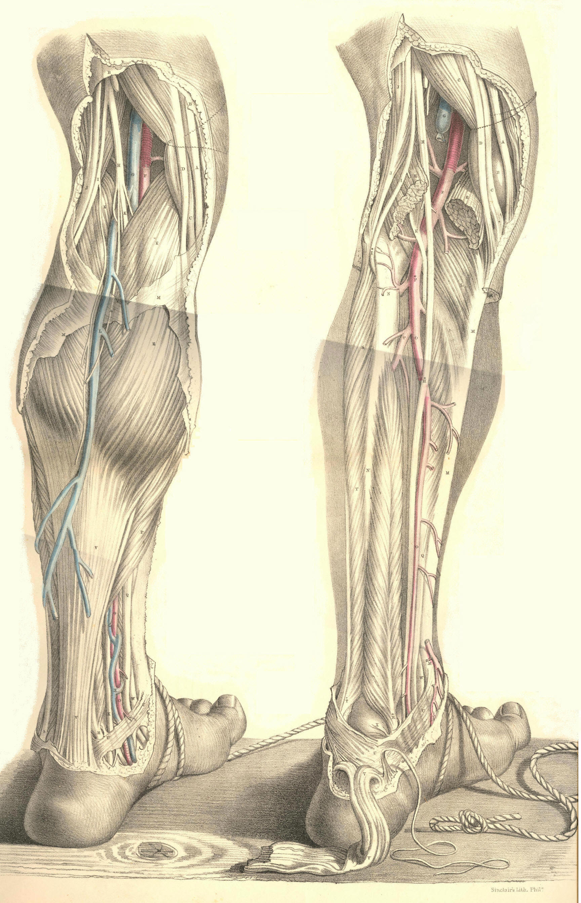

SURGICAL ANATOMY by JOSEPH MACLISE
COMMENTARY ON PLATES 65 & 66.
THE SURGICAL DISSECTION OF THE POPLITEAL SPACE
AND THE POSTERIOR CRURAL REGION.
On comparing the bend of the knee with the bend of the elbow, as evident
a correspondence can be discerned between these two regions, as exists
between the groin and the axilla.
Behind the knee-joint, the muscles which connect the leg with the thigh
enclose the space named popliteal. When the integuments and subcutaneous
substance are removed from this place, the dense fascia lata may be seen
binding these muscles so closely together as to leave but a very narrow
interval between them at the mesial line. On removing this fascia, B B M
M, Plate 65, the muscles part asunder, and the popliteal space as
usually described is thereby formed. This region now presents of a
lozenge-shaped form, B J D K, of which the widest diameter, D J, is
opposite the knee-joint. The flexor muscles, C D J, in diverging from
each other as they pass down from the sides of the thigh to those of the
upper part of the leg, form the upper angle of this space; whilst its
lower angle is described by the two heads of the gastrocnemius muscle, E
E, arising inside the flexors, from the condyles of the femur. The
popliteal space is filled with adipose substance, in which are embedded
several lymphatic bodies and through which pass the principal vessels
and nerves to the leg.
In the dissection of the popliteal space, the more important parts first
met with are the branches of the great sciatic nerve. In the upper angle
of the space, this nerve will be found dividing into the peronaeal, I,
and posterior tibial branches, H K. The peronaeal nerve descends close
to the inner margin of the tendon, J, of the biceps muscle; and, having
reached the outer side of the knee, I*, Plate 66, below the insertion of
the tendon into the head of the fibula, winds round the neck of this
bone under cover of the peronaeus longus muscle, S, to join the anterior
tibial artery. The posterior tibial nerve, H K, Plate 65, descends the
popliteal space midway to the cleft between the heads of the
gastrocnemius; and, after passing beneath this muscle, to gain the inner
side of the vessels, H*, Plate 66, it then accompanies the posterior
tibial artery. On the same plane with and close to the posterior tibial
nerve in the popliteal space, will be seen the terminal branch of the
lesser sciatic nerve, together with a small artery and vein destined for
distribution to the skin and other superficial parts on the back of the
knee. Opposite the heads of the gastrocnemius, the peronaeal and
posterior tibial nerves give off each a branch, both of which descend
along the mesial line of the calf, and joining near the upper end of the
tendo Achillis, the single nerve here, N, Plate 65, becomes superficial
to the fascia, and thence descends behind the outer ankle to gain the
external border of the foot, where it divides into cutaneous branches
and others to be distributed to the three or four outer toes. In company
with this nerve will be seen the posterior saphena vein, L, which,
commencing behind the outer ankle, ascends the mesial line of the calf
to join the popliteal vein, G, in the cleft between the heads of the
gastrocnemius.
On removing next the adipose substance and lymphatic glands, we expose
the popliteal vein and artery. The relative position of these vessels
and the posterior tibial nerve, may now be seen. Between the heads of
the gastrocnemius, the nerve, H, giving off large branches to this
muscle, lies upon the popliteal vein, G, where this is joined by the
posterior saphena vein. Beneath the veins lies the popliteal artery, F.
On tracing the vessels and nerve from this point upwards through the
popliteal space, we find the nerve occupying a comparatively superficial
position at the mesial line, while the vessels are directed upwards,
forwards, and inwards, passing deeply, as they become covered by the
inner flexor muscles, C D, to the place where they perforate the tendon
of the adductor magnus on the inner side of the lower third of the
femur.
The popliteal artery, F, Plate 66, being the continuation of the
femoral, extends from the opening in the great adductor tendon at the
junction of the middle and lower third of the thigh, to the point where
it divides, in the upper, and back part of the leg, at the lower border
of the popliteus muscle, L, into the anterior and posterior tibial
branches. In order to expose the vessel through this extent, we have to
divide and reflect the heads of the gastrocnemius muscle, E E, and to
retract the inner flexors. The popliteal artery will now be seen lying
obliquely over the middle of the back of the joint. It is deeply placed
in its whole course. Its upper and lower thirds are covered by large
muscles; whilst the fascia and a quantity of adipose tissue overlies its
middle. The upper part of the artery rests upon the femur, its middle
part upon the posterior ligament of the joint, and its lower part upon
the popliteus muscle. The popliteal vein, G; adheres to the artery in
its whole course, being situated on its outer side above, and posterior
to it below. The vein is not unfrequently found to be double; one vein
lying to either side of the artery, and both having branches of
communication with each other, which cross behind the artery. In some
instances the posterior saphena vein, instead of joining the popliteal
vein, ascends superficially to terminate in some of the large veins of
the thigh. Numerous lymphatic vessels accompany the superficial and deep
veins into the popliteal space, where they join the lymphatic bodies,
which here lie in the course of the artery.
The branches derived from the popliteal artery are the muscular and the
articular. The former spring from the vessel opposite those parts of the
several muscles which lie in contact with it; the latter are generally
five in number--two superior, two inferior, and one median. The two
superior articular branches arise from either side of the artery, and
pass, the one beneath the outer, the other beneath the inner flexors,
above the knee-joint; and the two inferior pass off from it, the one
internally, the other externally, beneath the heads of the gastrocnemius
below the joint; while the middle articular enters the joint through the
posterior ligament. The two superior and inferior articular branches
anastomose freely around the knee behind, laterally, and in front, where
they are joined by the terminal branches of the anastomotic, from the
femoral, and by those of the recurrent, from the anterior tibial. The
main vessel, having arrived at the lower border of the popliteus muscle,
divides into two branches, of which one passes through the interosseous
ligament to become the anterior tibial; while the other, after
descending a short way between the bones of the leg, separates into the
peronaeal and posterior tibial arteries. In some rare instances the
popliteal artery is found to divide above the popliteus muscle into the
anterior, or the posterior tibial, or the peronaeal.
The two large muscles, (gastrocnemius and soleus,) forming the calf of
the leg, have to be removed together with the deep fascia in order to
expose the posterior tibial, and peronaeal vessels and nerves. The
fascia forms a sheath for the vessels, and binds them close to the deep
layer of muscles in their whole course down the back of the leg. The
point at which the main artery, F, Plate 66, gives off the anterior
tibial, is at the lower border of the popliteus muscle, on a level with
N, the neck of the fibula; that at which the artery again subdivides
into the peronaeal, P, and posterior tibial branches, O, is in the
mesial line of the leg, and generally on a level with the junction of
its upper and middle thirds. From this place the two arteries diverge in
their descent; the peronaeal being directed along the inner border of
the fibula towards the back of the outer ankle; while the posterior
tibial, approaching the inner side of the tibia, courses towards the
back of the inner ankle. The gastrocnemius and soleus muscles overlie
both arteries in their upper two thirds; but as these muscles taper
towards the mesial line where they end in the tendo Achillis, V V, Plate
65, they leave the posterior tibial artery, O, with its accompanying
nerve and vein, uncovered in the lower part of the leg, except by the
skin and the superficial and deep layers of fasciae. The peronaeal
artery is deeply situated in its whole course. Soon after its origin, it
passes under cover of the flexor longus pollicis, R, a muscle of large
size arising from the lower three fourths of the fibula, N, and will be
found overlapped by this muscle on the outer border of the tendo
Achillis, as low down as the outer ankle. The two arteries are
accompanied by venae comites, which, with the short saphena vein, form
the popliteal vein. The posterior tibial artery is closely followed by
the posterior tibial nerve. In the popliteal space, this nerve crosses
to the inner side of the posterior tibial artery, where both are about
to pass under the gastrocnemius muscle, to which they give large
branches. Near the middle of the leg, the nerve recrosses the artery to
its outer side and in this relative position both descend to a point
about midway between the inner ankle and calcaneum, where they appear
having the tendons of the tibialis posticus and flexor longus digitorum
to their inner side and the tendon of the flexor longus pollicis on
their outer side. Numerous branches are given off from the nerve and
artery to the neighbouring parts in their course.
The varieties of the posterior crural arteries are these--the tibial
vessel, in some instances, is larger than usual, while the peronaeal is
small, or absent; and, in others, the peronaeal supplies the place of
the posterior tibial, when the latter is diminished in size. The
peronaeal has been known to take the position of the posterior tibial in
the lower part of the leg, and to supply the plantar arteries. In
whatever condition the two vessels may be found, there will always be
seen ramifying around the ankle-joint, articular branches, which
anastomose freely with each other and with those of the anterior tibial.
The popliteal artery is unfavourably circumstanced for the application
of a ligature. It is very deeply situated, and the vein adheres closely
to its posterior surface. Numerous branches (articular and muscular)
arise from it at short intervals; and these, besides being a source of
disturbance to a ligature, are liable to be injured in the operation, in
which case the collateral circulation cannot be maintained after the
main vessel is tied. There is a danger, too, of injuring the middle
branch of the sciatic nerve, in the incisions required to reach the
artery; and, lastly, there is a possibility of this vessel dividing
higher up than usual. Considering these facts in reference to those
cases in which it might be supposed necessary to tie the popliteal
artery--such cases, for example, as aneurism of either of the crural
arteries, or secondary haemorrhages occurring after amputations of the
leg at a time when the healing process was far advanced and the bleeding
vessels inaccessible,--it becomes a question whether it would not be
preferable to tie the femoral, rather than the popliteal artery. But
when the popliteal artery itself becomes affected with aneurism, and
when, in addition to the anatomical circumstances which forbid the
application of a ligature to this vessel, we consider those which are
pathological,--such as the coats of the artery being here diseased, the
relative position of the neighbouring parts being disturbed by the
tumour, and the large irregular wound which would be required to isolate
the disease, at the risk of danger to the health from profuse
suppuration, to the limb from destruction of the collateral branches, or
to the joint from cicatrization, rendering it permanently bent,--we must
acknowledge at once the necessity for tying the femoral part of the main
vessel.
When the popliteal artery happens to be divided in a wound, it will be
required to expose its bleeding orifices, and tie both these in the
wound. For this purpose, the following operation usually recommended for
reaching the vessel may be necessary. The skin and fascia lata are to be
incised in a direction corresponding to that of the vessel. The extent
of the incision must be considerable, (about three inches,) so as the
more conveniently to expose the artery in its deep situation. On laying
bare the outer margin of the semi-membranosus muscle, while the knee is
straight, it now becomes necessary to flex the joint, in order that this
muscle may admit of being pressed inwards from over the vessel. The
external margin of the wound, including the middle branch of the sciatic
nerve, should be retracted outwards, so as to ensure the safety of that
nerve, while room is gained for making the deeper incisions. The adipose
substance, which is here generally abundant, should now be divided,
between the mesial line and the semimembranosus, till the sheath of
the vessels be exposed. The sheath should be incised at its inner side,
to avoid wounding the popliteal vein. The pulsation of the artery will
now indicate its exact position. As the vein adheres firmly to the coats
of the artery, some care is required to separate the two vessels, so as
to pass the ligature around each end of the artery from without inwards,
while excluding the vein. While this operation is being performed in a
case of wound of the popliteal artery, the haemorrhage may be arrested
by compressing the femoral vessel, either against the femur or the os
pubis.
In the operation for tying the posterior tibial artery near its middle,
an incision of three or four inches in extent is to be made through the
skin and fascia, in a line corresponding with the inner posterior margin
of the tibia and the great muscles of the calf. The long saphena vein
should be here avoided. The origins of the gastrocnemius and soleus
muscles require to be detached from the tibia, and then the knee is to
be flexed and the foot extended, so as to allow these muscles to be
retracted from the plane of the vessels. This being done, the deep
fascia which covers the artery and its accompanying nerve is next to be
divided. The artery will now appear pulsating at a situation an inch
from the edge of the tibia. While the ligature is being passed around
the artery, due care should be taken to exclude the venae comites and
the nerve.
DESCRIPTION OF PLATES 65 & 66.
PLATE 65.
A. Tendon of the gracilis muscle.
B B. The fascia lata.
C C. Tendon of the semimembranosus muscle.
D. Tendon of the semitendinosus muscle.
E E. The two heads of the gastrocnemius muscle.
F. The popliteal artery.
G. The popliteal vein joined by the short saphena vein.
H. The middle branch of the sciatic nerve.
I. The outer (peronaeal) branch of the sciatic nerve.
K. The posterior tibial nerve continued from the middle branch of the
sciatic, and extending to K, behind the inner ankle.
L. The posterior (short) saphena vein.
M M. The fascia covering the gastrocnemius muscle.
N. The short (posterior) saphena nerve, formed by the union of branches
from the peronaeal and posterior tibial nerves.
O. The posterior tibial artery appearing from beneath the soleus muscle
in the lower part of the leg.
P. The soleus muscle joining the tendo Achillis.
Q. The tendon of the flexor longus communis digitorum muscle.
R. The tendon of the flexor longus pollicis muscle.
S. The tendon of the peronaeus longus muscle.
T. The peronaeus brevis muscle.
U U. The internal annular ligament binding down the vessels, nerves, and
tendons in the hollow behind the inner ankle.
V V. The tendo Achillis.
W. The tendon of the tibialis posticus muscle.
X. The venae comites of the posterior tibial artery.
PLATE 66.
A C D E F G H I indicate the same parts as in Plate 65.
B. The inner condyle of the femur.
K. The plantaris muscle lying upon the popliteal artery.
L. The popliteus muscle.
M M M. The tibia.
N N. The fibula.
O O. The posterior tibial artery.
P. The peronaeal artery.
Q R S T U V W. The parts shown in Plate 65.
X. The astragalus.

Plates 65, 66
COMMENTARY ON PLATES 67
& 68